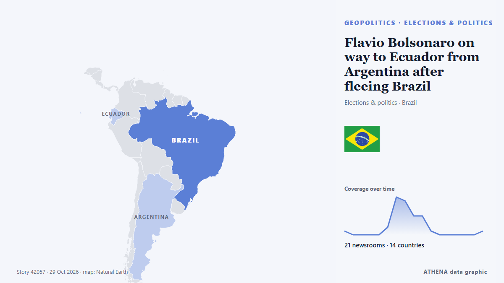

Flavio Bolsonaro on way to Ecuador from Argentina after fleeing Brazil

Defeated right-wing presidential candidate Flavio Bolsonaro was on his way to Ecuador after fleeing Brazil, Argentina's government said on Wednesday, October 28. from France 24 English
Reported independently by 21 outlets in 14 countries since 27 Oct, first by Sky News (World); coverage is fading. ATHENA rates the risk low (1.9/10), driven mainly by the severity of the harm described and its geographic and sector reach. Confidence is 85% (high), with 21 independent outlets corroborating it and an average source reliability of 76%.
Why it matters: Security and diplomatic developments can shift alliances, trade and markets well beyond the countries directly involved.
What changed: 33 new reports from 20 newsrooms in the 24 hours to 29 Oct.
At a glance
Selected, scored and written by ATHENA's published methodology. No editor intervenes in individual events. How this is produced ›
| 27 Oct 21:35 UTC | 1 |
|---|---|
| 27 Oct 23:35 UTC | 0 |
| 28 Oct 01:35 UTC | 0 |
| 28 Oct 03:35 UTC | 0 |
| 28 Oct 05:35 UTC | 0 |
| 28 Oct 07:35 UTC | 2 |
| 28 Oct 09:35 UTC | 10 |
| 28 Oct 11:35 UTC | 9 |
| 28 Oct 13:35 UTC | 5 |
| 28 Oct 15:35 UTC | 5 |
| 28 Oct 17:35 UTC | 1 |
| 28 Oct 19:35 UTC | 0 |
| 28 Oct 21:35 UTC | 0 |
| 28 Oct 23:35 UTC | 0 |
| 29 Oct 01:35 UTC | 0 |
| 29 Oct 03:35 UTC | 0 |
| 29 Oct 05:35 UTC | 1 |
| 28 Oct 09:59 UTC | 0.0 |
|---|---|
| 28 Oct 11:19 UTC | 1.3 |
| 29 Oct 07:04 UTC | 1.9 |
Why these numbers
Importance
Risk
Confidence
The reporting — who reported it, and when
headline as published · opens the original- Sky News (World) · United KingdomFlavio Bolsonaro lands in US after fleeing Brazil following election defeat
- France 24 English · FrancePlane reportedly carrying Brazil's Bolsonaro departs Ecuador
- France 24 English · FranceBrazil's Flavio Bolsonaro flies on from Ecuador to mystery destination despite travel ban
- Vanguard · NigeriaPlane reportedly carrying Bolsonaro stops briefly in Ecuador
- The Irish News (Belfast) · United KingdomFlavio Bolsonaro flees Brazil through Argentina and is expected to land in Miami
- Belfast Telegraph · United KingdomFlavio Bolsonaro flees Brazil through Argentina and is expected to land in Miami
- France 24 English · FranceFlavio Bolsonaro on way to Ecuador from Argentina after fleeing Brazil
- Channels TV · NigeriaFlavio Bolsonaro On Way To Ecuador From Argentina After Fleeing Brazil
- Stuff · New ZealandFlávio Bolsonaro flees Brazil through Argentina and is expected to land in Miami
- Euronews English · FranceFlavio Bolsonaro arrives in Miami after fleeing Brazil
- France 24 English · FranceBrazil: Bolsonaro defeated and on the run
- The Guardian · United KingdomFlávio Bolsonaro calls himself the ‘leader of Brazil’ after fleeing to Miami
- France 24 English · FranceBrazil: Flavio Bolsonaro leaves Argentina for alleged US asylum after defeat
- The Straits Times · SingaporeFlavio Bolsonaro, family land in US after Trump offers Brazil exit
- Agência Brasil (English) · BrazilFlávio Bolsonaro crosses Argentine border, heads to Ecuador
- Jamaica Observer · JamaicaPlane reportedly carrying Brazil’s Bolsonaro departs Ecuador
- Free Malaysia Today · MalaysiaPlane reportedly carrying Brazil’s Bolsonaro departs Ecuador
- Buenos Aires Times · ArgentinaFlávio Bolsonaro saga deepens after Argentina says he left for Ecuador
- Buenos Aires Times · ArgentinaFlávio Bolsonaro travelling to United States on private jet from Argentina
- Agência Brasil (English) · BrazilCampaign coordinator says he was surprised by Flávio’s escape
- Agência Brasil (English) · BrazilPlane carrying Flávio Bolsonaro and his family heads to Miami
- Agência Brasil (English) · BrazilAircraft carrying Flávio Bolsonaro and his family lands in US
- The Independent · United KingdomFlávio Bolsonaro lands in Miami after Brazil election defeat and corruption investigation
- MercoPress · UruguayArgentina confirms Bolsonaro crossed via Iguazú before flying to Miami
- DW English · GermanyFlavio Bolsonaro lands in Miami after fleeing Brazil for US
- Bangkok Post — page reader · ThailandBolsonaro flees Brazil for US after election defeat
- Club of Mozambique · MozambiqueDefeated presidential candidate Flávio Bolsonaro and his family land in Miami after fleeing Brazil
- Buenos Aires Times · ArgentinaFlávio Bolsonaro received by US authorities as he lands in Florida with family
- The Irish News (Belfast) · United KingdomLosing presidential candidate Bolsonaro arrives in US via Argentina and Ecuador
- Belfast Telegraph · United KingdomLosing presidential candidate Bolsonaro arrives in US via Argentina and Ecuador
- The Straits Times · SingaporeA timeline of Brazilian Senator Flavio Bolsonaro’s wild journey to the US
- BBC News · United KingdomHow did Flávio Bolsonaro end up in Miami?
- Times of India · India72 hours, 3 countries, 1 private jet: Flavio Bolsonaro’s wild escape to US